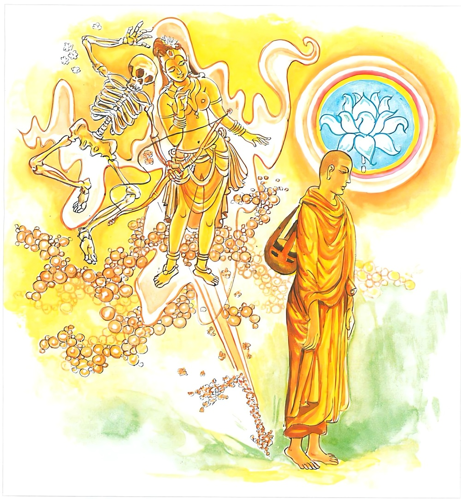

4-2 දෙවන මිරිඟුවක් කර්මස්ථාන කරගත් භික්ෂුවකගේ වස්තුවයි.
මෙම කතාව සද්ධර්ම සාගරයෙන් ද කියවන්න.
ඵෙණූපමං කායමිමං විදිත්වා
මරීචිධම්මං අභිසම්බුධානො.
ඡෙත්වාන මාරස්ස පපුප්ඵකානි
අදස්සනං මච්චුරාජස්ස ගච්ඡෙ.
මහණ තෙම මේ කය පෙණ පිඬක් වැනි කොට දැන, මේ කය මිරිඟුවක් බඳු යැ යි ද දැන ගන්නේ, මාරයාගේ ප්රපුෂ්පකයන් (ත්රෛභූමක වෘත්තය) ආර්ය්ය මාර්ගයෙන් සිඳ මෘත්යුමාරයට අවිෂය වූ අමා මහනිවනට පැමිණෙන්නේ ය.

ඵෙණූපමං යනාදි මේ ධර්මදේශනාව ශාස්තෘන්වහන්සේ සැවැත්නුවර වාසයකරන කාලයෙහි මිරිඟුව කමටහනක් කරගත් එක්තරා භික්ෂුවක් අරභයා දේශනා කළසේක. ඒ භික්ෂුව බුදුන් වෙතින් කමටහන් ගෙන මහණදම් පුරන්නෙමියි ආරණ්යයට ගොස් බොහෝ උත්සාහ කොටත් රහත්විය නොහැකිව විශේෂයෙන් කමටහන් කියවා ගනිමියි බුදුන් හමුවට එන අතරමග මිරිඟුවක් දැක, මේ මිරිඟුව ග්රීෂ්මකාලයේ නැගී ළඟ ඇති රූපයක් මෙන් පෙනෙයි. ළඟට ආවවුන්ට නොපෙනෙයි. මේ ආත්මභාවයද ඉපදීම් වැයවීම් වශයෙන් එසේම වන්නේයයි මරීචිකර්මස්ථානය වඩමින් අවුත් මාර්ගක්ලාන්තය ඇතිවී අචිරවතී ගඟෙන් නා එක් සැඩපහර පෙනෙන ගංඉවුරේ ගසක් යට හිඳගත්තේය. ජලවේගය ගැටීමෙන් උඩට නැගී කැඩිකැඩී යන මහත්වූ පෙණපිඩු දැක මේ ආත්මභාවයත් ඉපදී බිඳී යන්නේ ඒ ආකාරයෙනියි අරමුණු කරගත්තේය. බුදුරජාණන්වහන්සේ ගඳකිළියෙහි වැඩසිටිමින්ම ඒ තෙරුන් දැක, මහණ, ඒ එසේමයි. මේ ආත්මභාවයත් පෙණපිඩක් මෙන්, මිරිඟුවක් මෙන් උපදින බිඳෙන ස්වභාවය ඇත්තේයයි වදාරා මේ ගාථාවද වදාළසේක.
පෙණ පිඩුවක් වැනි මේ කය
මිරිඟුවකැයි හඳුනාගෙන
මාරයාගෙ පස්කම් බැමි
බිඳදා ජය ගන්නේ.
එහි ඉමං යනු මේ කෙස් සමූහ සංඛ්යාත කායං අබල දුබල අස්ථිරකාය තාවකාලික වශයෙන් පෙණපිඩුවකට සමානයයි විදිත්වා දැන මරීචි ධම්මං යනු යම්සේ මිරිඟුව දුර සිටින විට රූපගතවීමක් මෙන් අතින් ගතහැක්කක් සේ වැටහෙයි. ළඟට එන්නාට එය රික්තයක් හිස් එකක් නැති එකක්සේ අතින් ගත නොහැක්කක් සේ වැටහෙයි. එසේම ක්ෂණිකව එකක් නැසී එකක් ඇතිවන අර්ථ වශයෙන් මේ කයද මිරිඟුවකට සමාන පැවතුම් ඇත්තේය. අභිසම්බුධානො යනු අවබෝධ කරන්නේ, දැනගන්නේ යන අර්ථයි. පපුප්ඵකානි යනු මාරයාගේ පපුප්ඵක නම්ලද ත්රෛභූමකවෘත්ත ආර්යමාර්ගඥානයෙන් සිඳදමා ක්ෂීණාශ්රව භික්ෂුව මාරරාජයාගේ දර්ශනයට හෙවත් මාරදැලට අසුනොවී, විෂය නොවී අමාමහ නිවනට පැමිණෙන්නේය.
ගාථා කෙළවර තෙරණුවෝ ප්රතිසම්භිදා සහිතව රහත්බවට පැමිණ බුදුන්ගේ රන්වන් සිරුරට ස්තුති කරමින් වන්දනා කරමින් පැමිණියේය.